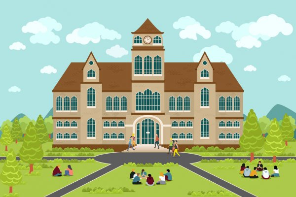

V K PUBLIC SCHOOL

HOME
VK Public School is affiliated to CBSE with the Affiliation no. 123456 and is running from Nursery to Senior Secondary Classes (XII). Since its inception in April 2010, the school has strived hard to achieve heights and the present strength of students is 1900.
VKPS aims in holistic development of individual child. It always moves on the path of inculcating moral and ethical values in students apart from developing them academically and culturally.
- Vision
- Our vision is to develop well rounded, confident and responsible individuals who aspire to achieve their full potential. We will do this by providing a welcoming, happy, safe, and supportive learning environment in which everyone is equal and all achievements are celebrated.
- Mission
- Our Mission is to help every child in the world love learning.